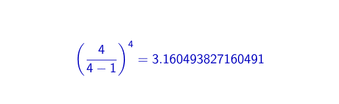
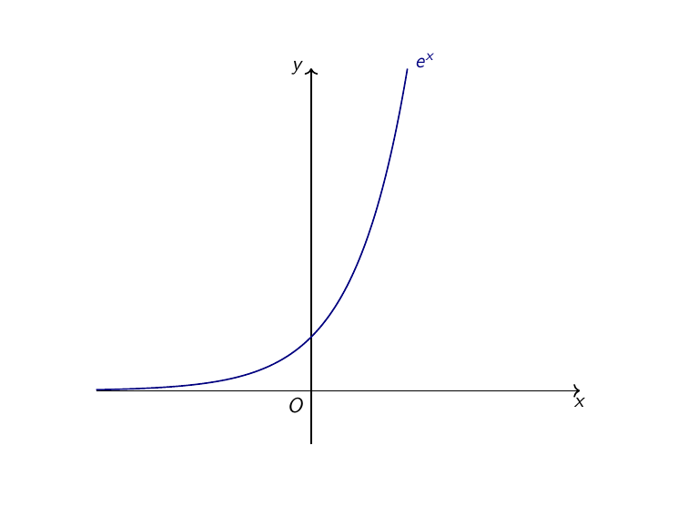
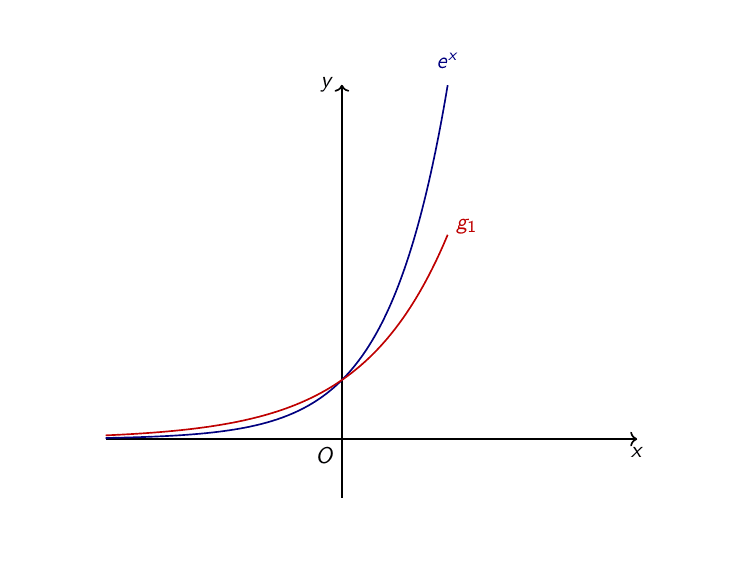
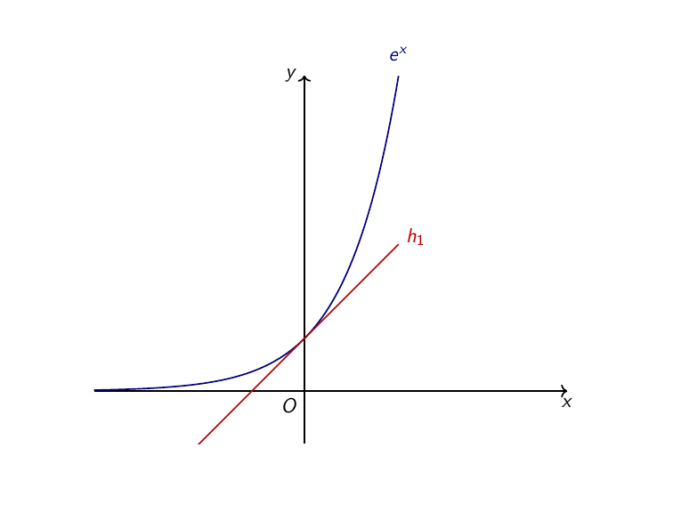

Οι 50 αποχρώσεις του e#

Το χαρακτικό σε ξύλο Δύο τεμνόμενα επίπεδα του Maurits Cornelis Escher.#
Εισαγωγή#
Τον αριθμό \(e\) τον συναντάμε πρώτη φορά στην άλγεβρα της Β” Λυκείου, σε ό,τι έχει να κάνει με τα αμιγώς σχολικά μαθηματικά. Μήπως όμως έχει τύχει να έρθουμε σε επαφή μαζί του και αρκετά νωρίτερα, απλά δεν το πήραμε μυρωδιά εγκαίρως; Η αλήθεια είναι ότι από τους τρεις πολύ διάσημους άρρητους αριθμούς - τον \(\pi\) , τον \(e\) και την «χρυσή τομή» \(\phi\) - ο \(e\) ίσως είναι ο λιγότερο διαφημισμένος, για διάφορους λόγους, μέσα στους οποίους μπορεί να είναι και το νεαρό της ηλικίας του (βλέπεται, ο \(\pi\) , για παράδειγμα, ήταν γνωστός από αρχαιοτάτων χρόνων). Σκοπός μας λοιπόν είναι να αναδείξουμε μερικές περιστάσεις στις οποίες ο \(e\) είναι εκεί, αλλά δεν τον βλέπουμε - κάποια παραδείγματα υπάρχουν εδώ καθώς και διάσπαρτα μέσα στις ασκήσεις των εκθετικών συναρτήσεων.
Το «παραδοσιακό» πρόβλημα του διαρκούς ανατοκισμού#
Ίσως ο πιο γνωστός τρόπος για να ορίσει κανείς τον αριθμό \(e\) είναι μέσα από το πρόβλημα του συνεχούς ανατοκισμού. Ας υποθέσουμε ότι έχουμε το εξωφρενικό ποσό της μία δραχμής (έρχεται, έρχεται) και ότι θέλουμε να το καταθέσουμε σε κάποια τράπεζα. Με το που το σκεφτόμαστε αυτό, επειδή οι τραπεζίτες τα μυρίζονται εγκαίρως αυτά, μας παίρνει η τράπεζα \(T_1\) να μας ενημερώσει για το πρόγραμμα προθεσμιακών καταθέσεων «Βάλε μια δραχμή στην άκρη», το οποίο μας δίνει τη δυνατότητα, στο τέλος κάθε έτους, να εισπράξουμε ως τόκο το 100% του ποσού που έχουμε καταθέσει, με την μόνη προϋπόθεση να μείνει δεσμευμένο το ποσό μας στην τράπεζα για όλο το έτος. Με λίγα λόγια, θα εισπράξουμε:
δραχμές μέσα σε ένα έτος. Ενθουσιασμένοι, ετοιμαζόμαστε να πάμε από το κατάστημα της τράπεζας γα να κλείσουμε την επικερδή αυτή συμφωνία για εμάς, όταν, ξαφνικά, ξαναχτυπάει το τηλέφωνό μας. Αυτήν τη φορά μας καλούν από την τράπεζα \(T_2\) η οποία μας κάνει την εξής προσφορά: αν δεσμεύσουμε το κεφάλαιό μας εκεί για έναν χρόνο, τότε σε κάθε εξάμηνο θα μας δίνει το 50% του ποσού που εκείνη τη στιγμή θα βρίσκεται στον λογαριασμό μας. Δηλαδή, για το πρώτο εξάμηνο θα πάρουμε:
δραχμές. Έτσι, στο επόμενο εξάμηνο θα πάρουμε:
δραχμές, πράγμα που καθιστά τη δεύτερη προσφορά καλύτερη από την πρώτη. Παρατηρήστε ότι μπορούμε να ξαναγράψουμε το συνολικό μας κέρδος ως εξής:
Κι εκεί που νομίζουμε ότι τα έχουμε κανονίσει, πέφτει το μάτι μας σε ένα διαφημιστικό φυλλάδιο της τράπεζας \(T_3\) το οποίο, μεταξύ άλλων, έχει και την εξής προσφορά: «Δεσμεύοντας για έναν χρόνο τα λεφτά σας στην τράπεζά μας μπορείτε να εισπράττετε κάθε τετράμηνο το \(\dfrac{1}{3}\) των χρημάτων που έχετε εκείνη τη στιγμή στον λογαριασμό σας». Μετά από λίγες πράξεις, βλέπουμε ότι στο τέλος του πρώτου τετραμήνου θα έχουμε κερδίσει:
δραχμές. Έτσι, στο τέλος το δεύτερου τετραμήνου θα έχουμε κερδίσει:
δραχμές. Συνακόλουθα, στο τέλος του έτους (τρίτο τετράμηνο), θα έχουμε τελικό κέρδος:
δραχμές, δηλαδή, περίπου 2.37037 δραχμές, κέρδος ακόμα μεγαλύτερο από το προηγούμενο. Ανάλογες προτάσεις δεχόμαστε και από την τράπεζα \(T_4\) και από την \(T_5\) και, γενικότερα, η τράπεζα \(T_n\) μας καταθέτει την εξής πρόταση: «Δεσμεύοντας για ένα έτος τα χρήματά σας σε εμάς, εμείς θα χωρίσουμε το έτος σε \(n\) ίσα χρονικά διαστήματα και στο τέλος καθενός από αυτά θα σας καταθέτουμε τόκους ίσους με το \(\dfrac{1}{n}\) του ποσού που θα βρίσκεται εκείνη τη στιγμή στον λογαριασμό σας». Έτσι, μετά την πρώτη περίοδο θα έχουμε κέρδος:
δραχμές, ενώ, μετά τη δεύτερη περίοδο θα έχουμε κέρδος:
δραχμές. Συνεχίζοντας ανάλογα, μπορούμε να βρούμε σχετικά εύκολα ότι στο τέλος της \(n-\) οστής περιόδου (δηλαδή, στο τέλος του έτους), θα έχουμε μαζέψει ακριβώς:
δραχμές. Το ζήτημα είναι, ποια από όλες αυτές τις προσφορές να δεχτούμε;
Προφανώς, αυτή που μας αποφέρει το μεγαλύτερο κέρδος. Ας δούμε πώς αυξάνονται τα κέρδη μας καθώς μεγαλώνει η προσφορά που δεχόμαστε από την εκάστοτε τράπεζα:
Τα κέρδη μας.#
Ενώ στην αρχή φαινόταν να κερδίζουμε λεφτά «με τη σέσουλα», όσο προχωράμε φαίνεται να κερδίζουμε όλο και λιγότερα χρήματα. Για την ακρίβεια, όσο κι αν προχωράμε, φαίνεται να μην μπορούμε να πάμε και πολύ παρακάτω από έναν αριθμό περίπου ίσο με 2.718. Για όσους θυμούνται τα πρώτα δεκαδικά ψηφία του \(e\) , μπορούν εύκολα να δουν πού πάει η κατάσταση. Ο \(e\) έχει το εξής δεκαδικό ανάπτυγμα:
το οποίο ταιριάζει «γάντι» με τις προσεγγίσεις που βλέπουμε παραπάνω. Και η αλήθεια είναι ότι μπορούμε να αποδείξουμε το εξής: καθώς το \(n\) παίρνει απεριόριστα μεγάλες τιμές, τότε τα κέρδη μας προσεγγίζουν τον \(e\) (για την ακρίβεια, αυτός είναι και ο πλέον συνηθισμένος ορισμός που δίνεται για τον \(e\) σε ένα τυπικό μάθημα Απειροστικού Λογισμού).
Ήταν ένας γάιδαρος…#
Αυτή ίσως είναι η αγαπημένη μου από όλες τις εμφανίσεις του \(e\) . Έχουμε έναν λόφο στη βάση του οποίου βρισκόμαστε εμείς, ένα δεμάτι άχυρο και ένας γάιδαρος. Ο στόχος μας είναι να φτάσει στην κορυφή του λόφου όσο μεγαλύτερο μέρος του δεματιού γίνεται, λαμβάνοντας υπ” όψιν τους εξής περιορισμούς:
εμείς έχουμε την μέση μας και δεν μπορούμε να κουβαλήσουμε τίποτα, οπότε όλα θα τα φορτωθεί το δύσμοιρο το ζωάκι μας,
ο γάιδαρός μας έχει ένα κακό συνήθειο: όσο μέρος της διαδρομής διανύει ανεβαίνοντας, τόσο μέρος τρώει από αυτό που κουβαλάει. Για παράδειγμα, αν έχει ανέβει μέχρι τη μέση, θα φάει το μισό από ό,τι είναι στην πλάτη του. Αν έχει ανέβει τα 2/7 της διαδρομής, θα φάει τα 2/7 από ό,τι έχει στην πλάτη του κ.λπ.,
ο γάιδαρός μας δεν τρώει τίποτα στο κατέβασμα (μπορείτε να φανταστείτε ότι κατεβαίνει τον λόφο με «βαρελάκι»).
Αν δοκιμάσουμε, λοιπόν, να φορτώσουμε όλο το δεμάτι με το άχυρο στην πλάτη του γαϊδαράκου μας και να ανέβουμε τον λόφο, θα φτάσουμε πάνω και θα δούμε ότι έχει φάει όλο το άχυρο, οπότε σίγουρα πρέπει να σκεφτούμε κάτι καλύτερο για να φτάσει έστω και λίγο άχυρο στην κορυφή. Αυτό που είναι βέβαιο είναι ότι πρέπει να μεσολαβεί κάποια στάση διότι ο,τιδήποτε μεταφέρει ο γάιδαρός μας απευθείας στην κορυφή το «εξαφανίζει» (ξέρουμε πολύ καλά πού καταλήγει, βεβαίως - βεβαίως).
Ας δοκιμάσουμε το εξής: Θα φορτώσουμε το δεμάτι στον γάιδαρο και θα το ανεβάσουμε μέχρι τη μέση του λόφου, οπότε και θα έχει φτάσει σώο το μισό του φορτίου, δηλαδή:
Έπειτα, θα σταματήσουμε, θα πάρουμε δυο ανάσες και θα ξαναφορτώσουμε στον γάιδαρο το μισό δεμάτι που μας έχει απομείνει. Έτσι, αφού θα ανέβουμε τώρα το άλλο μισό του λόφου, ο γάιδαρος θα φάει το μισό από αυτό που έχει στην πλάτη του, δηλαδή στο τέλος θα φτάσει στην κορυφή:
από το αρχικό μας δεμάτι. Για να το γράψουμε και λίγο πιο όμορφα, μπορούμε να πούμε ότι θα φτάσει στην κορυφή:
από το αρχικό μας δεμάτι.
Αλλά, γιατί να μην κόψουμε τη διαδρομή μας σε τρία στάδια; Στο πρώτο τρίτο θα έχει φαγωθεί το 1/3 του δεματιού, δηλαδή θα μας έχει μείνει:
του αρχικού δεματιού. Ανεβαίνοντας και το δεύτερο τρίτο, θα χάσουμε άλλο ένα τρίτο από αυτό που είχαμε πριν, οπότε θα μας μείνει:
του αρχικού δεματιού. Ανεβαίνοντας και το τελευταίο τρίτο της διαδρομής, θα μας απομείνει:
του αρχικού δεματιού. Γενικά, αν «κόψουμε» τη διαδρομή σε \(n\) ίσα τμήματα τότε, με ένα παρόμοιο σκεπτικό, μπορούμε να βρούμε ότι θα φτάσει στην κορυφή:
του αρχικού μας δεματιού. Όλα καλά ως εδώ, αλλά τι σχέση έχει αυτό με το \(e\) ; Για να το διαπιστώσουμε αυτό, ας δούμε τι τιμές παίρνει η παραπάνω ποσότητα για διάφορες τιμές του \(n\) :
Ανεβαίνοντας τον λόφο.#
Ωραία, και τι σχέση έχει αυτό με το \(e\) ; Σε πρώτο επίπεδο, ίσως καμία. Ας πάρουμε όμως το κομπιουτεράκι μας και ας κάνουμε τη διαίρεση \(1\div e\) . Τότε, θα βρούμε κάτι σαν το παρακάτω:
το οποίο, όπως βλέπετε, μοιάζει αρκετά με τις τιμές που παίρνει η ποσότητα:
για μεγάλες τιμές του \(n\) . Πράγματι, μπορούμε να αποδείξουμε ότι, καθώς το \(n\) μεγαλώνει απεριόριστα, η παραπάνω ποσότητα προσεγγίζει το \(\dfrac{1}{e}\) .
Η λοτταρία του Euler#
Στην Άνω Περαραχούλα κάθε μήνα γίνεται μια λοτταρία η οποία έχει τους εξής όρους:
Όποιος θέλει να συμμετέχει πρέπει να δώσει μία ακολουθία από 50 αριθμούς, όλοι από το 1 μέχρι και το 50.
Η σειρά των αριθμών μετράει. Έτσι, είναι διαφορετικό να δώσει κανείς την ακολουθία 1,2,3,4,5,…,50 από το να δώσει την ακολουθία 1,2,4,3,5,…,50.
Μπορεί να επαναληφθεί ένας αριθμός οσεσδήποτε φορές το επιθυμούμε. Έτσι, μπορεί κανείς να δώσει μία ακολουθία με 50 άσσους (1,1,1,…,1).
Με αυτούς τους κανόνες, οι δυνατοί συνδυασμοί που μπορούν να εμφανισθούν στην κλήρωση είναι \(50^{50}\) . Εξηγούμαι. Η κληρωτίδα θα βγάλει μία σειρά από 50 αριθμούς καθένας από τους οποίους μπορεί να είναι οποιοσδήποτε από το 1 μέχρι και το 50. Έτσι, για τον πρώτο αριθμό υπάρχουν 50 διαφορετικές επιλογές. Επίσης, ανεξάρτητα από την επιλογή του πρώτου αριθμού, υπάρχουν και 50 επιλογές για τον δεύτερο αριθμό, επομένως υπάρχουν συνολικά \(50\times50=50^2\) επιλογές για τους δύο πρώτους αριθμούς. Για τον τρίτο αριθμό υπάρχουν επίσης 50 επιλογές, το ίδιο και για τον τέταρτο, τον πέμπτο κ.ο.κ., οπότε συνολικά έχουμε:
δυνατούς συνδυασμούς. Από αυτούς εμείς καταθέτουμε έναν ακριβώς συνδυασμό, άρα η πιθανότητα να κερδίσουμε είναι ακριβώς:
Λίγο πιο δίπλα, στην Κάτω Περαραχούλα κάθε μήνα γίνεται η ίδια λοτταρία, αλλά, επειδή οι κάτοικοι του χωριού είναι ιδιαίτερα προληπτικοί, έχουν απαγορεύσει δια ροπάλου τον αριθμό 13 (ούτε κληρώνεται ούτε επιτρέπεται να παιχτεί). Έτσι, για να παίξει κανείς πρέπει να καταθέσει μία σειρά από 50 αριθμούς κανείς από τους οποίους δεν πρέπει να είναι το 13. Συνεπώς, για τον πρώτο αριθμό έχουμε 49 επιλογές, για τον δεύτερο 49, για τον τρίτο 49 κ.λπ., άρα, όλα τα πιθανά αποτελέσματα είναι \(49^{50}\) και η πιθανότητά μας να κερδίσουμε είναι:
Είναι σαφές ότι, δεδομένου ότι έχουμε να επιλέξουμε ανάμεσα σε 49 και όχι σε 50 αριθμούς, είναι, έστω και λίγο, πιο «εύκολο» να κερδίσουμε στην λοτταρία της Κάτω Περαραχούλας, παρά σε αυτήν της Άνω Περαραχούλας. Ωστόσο, πόσο πιο εύκολο είναι να κερδίσουμε στη μία λοτταρία σε σχέση με την άλλη; Για να το υπολογίσουμε αυτό αρκεί να πάρουμε το πηλίκο των δύο πιθανοτήτων νίκης που έχουμε βρει:
Χμμμ… Κάτι μας θυμίζει αυτό. Για πάμε λίγο να γενικεύσουμε. Αν στην πρώτη λοτταρία δεν είχαμε 50 υποψήφιους αριθμούς αλλά \(n\) , τότε ποια θα ήταν η πιθανότητα να νικήσουμε; Για τον πρώτο αριθμό που επιλέγουμε έχουμε \(n\) επιλογές, για τον δεύτερο και πάλι \(n\) κ.ο.κ., επομένως έχουμε συνολικά \(n^n\) δυνατές επιλογές. Επομένως, η πιθανότητα νίκης μας είναι ίση με:
Ανάλογα, στη δεύτερη λοτταρία επιλέγουμε \(n\) αριθμούς, αλλά έχουμε \(n-1\) επιλογές σε κάθε περίπτωση (θυμηθείτε ότι έχουμε πετάξει έναν αριθμό για «προληπτικούς» λόγους). Έτσι, έχουμε συνολικά \((n-1)^n\) δυνατές επιλογές, άρα η πιθανότητα νίκης είναι ίση με:
Παίρνοντας τον λόγο των δύο πιθανοτήτων έχουμε:
Αςδούμε κάποιες τιμές της παράστασης \(\left(\dfrac{n}{n-1}\right)^n\) :

Κάτω Περαραχούλα for ever!#
Όπως βλέπουμε, καθώς το \(n\) παίρνει αυθαίρετα μεγάλες τιμές η παραπάνω ποσότητα πλησιάζει το \(e\) - μπορούμε, προφανώς,να το αποδείξουμε και αυστηρά, αλλά δεν μας απασχολεί αυτό αυτήν τη στιγμή. Έτσι, κατά προσέγγιση, στην Κάτω Περαραχούλα κερδίζουμε περίπου \(e\) φορές πιο εύκολα από ότι στην Άνω Περαραχούλα.
Τα φρουτάκια του Euler#
Προφανώς δεν αναφερόμαστε στα φρούτα που μπορεί να έτρωγε ο Euler μετά το μεσημεριανό του ή σε κάτι τέτοιο, αλλά στο γνωστό παιχνίδι τζόγου. Ας υποθέσουμε λοιπόν ότι έχουμε μια μηχανή φρουτακίων με την οποία έχουμε πιθανότητα νίκης:
Αποφασίζουμε να ικανοποιήσουμε ένα όνειρο ζωής και να παίξουμε φρουτάκια τόσες πολλές φορές έτσι ώστε να κερδίσουμε τουλάχιστον μία φορά. Επειδή όμως είμαστε και λογικοί άνθρωποι (έχει φανεί αυτό ως τώρα, άλλωστε), δε θέλουμε να πετάξουμε και μια περιουσία, γι” αυτό και αποφασίζουμε να παίξουμε μόλις 200 φορές. Έτσι, σκεφτόμαστε, αφού σε κάθε δοκιμή έχουμε πιθανότητα \(\dfrac{1}{200}\) κερδίσουμε, αν παίξουμε 200 φορές, ε, μία θα την κερδίσουμε.
Μιας και ο διάολος έχει πολλά ποδάρια, όπως ξέρουμε, ας δούμε και ποια είναι η πιθανότητα, παίζοντας 200 φορές φρουτάκια με πιθανότητα νίκης \(\dfrac{1}{200}\) , να μην κερδίσουμε ούτε μία φορά. *Αρχικά, πρέπει να κάνουμε την εξής παρατήρηση: το αποτέλεσμα που θα φέρουμε σε κάποιο από τα παιχνίδια μας ούτε επηρεάζεται από τα προηγούμενα αποτελέσματά μας ούτε, με τη σειρά του, επηρεάζει τα επόμενα. Δηλαδή, το να κερδίσουμε στην όγδοη προσπάθειά μας δε μας λέει απολύτως τίποτα για το τι θα κάνουμε στην ένατη προσπάθειά μας ούτε για το τι συνέβη στην έβδομη. Τέτοια γεγονότα, των οποίων η έκβαση του ενός δεν επηρεάζει την έκβαση του άλλου, λέγονται *στοχαστικά ανεξάρτητα. Σε αυτές τις περιπτώσεις, όπου έχουμε δύο ή περισσότερα γεγονότα που είναι ανά δύο στοχαστικά ανεξάρτητα, η πιθανότητα να προκύψει ένα συγκεκριμένο αποτέλεσμα προκύπτει ως το γινόμενο των επιμέρους πιθανοτήτων. Επομένως, αφού κάθε νίκη στο παράδειγμά μας έχει πιθανότητα \(\dfrac{1}{200}\) , οπότε η ήττα θα έχει πιθανότητα:
αφού θα κάνουμε 200 στοχαστικά ανεξάρτητες προσπάθειες, η πιθανότητα να μην κερδίσουμε σε καμία από αυτές είναι:
Πριν συνεχίσουμε, ας εξηγήσουμε λίγο γιατί μπορούμε να πάρουμε το γινόμενο των πιθανοτήτων ως την πιθανότητα να συμβούν ταυτόχρονα όσα γεγονότα θέλουμε (στην προκειμένη, να χάσουμε 200 φορές). Μπορούμε να δούμε το κάθε παιχνίδι σαν τη ρίψη ενός ζαριού με 200 έδρες (άλλωστε, δεν έχουν όλα τα ζάρια έξι έδρες), από τις οποίες εμείς προσπαθούμε να μαντέψουμε ποια θα εμφανιστεί. Έτσι, η πιθανότητα να μαντέψουμε σωστά είναι ακριβώς \(\dfrac{1}{200}\) , άρα, η πιθανότητα αποτυχίας είναι \(\dfrac{199}{200}\) . Αν τώρα ρίξουμε δύο φορές το ζάρι, τα δυνατά αποτελέσματα είναι \(200\times200=200^2\) , επομένως, η πιθανότητα να αποτύχουμε και στις δύο μαντεψιές μας είναι να διαλέξουμε την πρώτη φορά κάποιοαπό τα 199 αποτελέσματα που δε θα εμφανιστούν και τη δεύτερη πάλι κάποιο από τα 199 αποτελέσματα που δε θα εμφανιστούν. Δεδομένου ότι η πρώτη ζαριά δεν επηρεάζει με κανέναν τρόπο τη δεύτερη, οι περιπώσεις που δεν μας ευνοούν είναι:
οπότε και η πιθανότητα να αποτύχουμε είναι:
Με άλλα λόγια, η πιθανότητα να αποτύχουμε και στις δύο μαντεψιές είναι το γινόμενο των πιθανοτήτων να αποτύχουμε σε καθεμία από τις μαντεψιές ξεχωριστά (δεδομένου ότι είναι ανεξάρτητες η μία από την άλλη).
Πίσω στο πρόβλημά μας, τώρα, ας δούμε την κατάσταση λίγο πιο γενικά. Έστω ότι κερδίζουμε με πιθανότητα \(\dfrac{1}{n}\) σε ένα παιχνίδι της μηχανής, οπότε και αποφασίζουμε να παίξουμε \(n\) παιχνίδια, με το σκεπτικό ότι ένα από αυτά θα το κερδίσουμε. Σε κάθε δοκιμή μας, η πιθανότητα να χάσουμε είναι:
επομένως, αν παίξουμε \(n\) φορές, δεδομένου ότι, όπως είπαμε, τα παιχνίδια είναι ανεξάρτητα το ένα από το άλλο, η πιθανότητα να χάσουμε και τις \(n\) φορές είναι:
Και, καθώς το \(n\) μεγαλώνει, πόσο περίπου είναι η παραπάνω πιθαντότητα; Σωστά μαντέψατε: \(\dfrac{1}{e}\) .
Τρέχουμε τώρα!#
Ας υποθέσουμε ότι βρισκόμαστε σε κάποιο σημείο ενός πολύ μεγάλου ευθύγραμμου δρόμου και ότι κινούμαστε με τον εξής τρόπο:
Ορίζουμε ένα σημείο αναφοράς έξω από τον δρόμο και τη χρονική στιγμή \(t=0s\) παίρνουμε μία απόσταση από αυτό, ας πούμε \(x(0)=1m\) .
Κάθε στιγμή που κινούμαστε φροντίζουμε έτσι ώστε το μέτρο της ταχύτητας μας (μετρημένο σε \(m/s\) ) να είναι ίσο, ως καθαρός αριθμός, με την απόστασή μας από αυτό το σημείο. Έτσι, την χρονική στιγμή \(t=0s\) θα πρέπει να έχουμε και μία αρχική ταχύτητα \(v(0)=1m/s\) .
Επιτρέπουμε στον χρόνο να έχει αρνητικές τιμές, υπό την εξής έννοια: η χρονική στιγμή \(t=-5s\) είναι η στιγμή πέντε δευτερόλεπτα πριν από τη χρονική στιγμή \(t=0s\) (άλλωστε, κανείς δεν είπε ότι το φαινόμενο ξεκινάει τη χρονική στιγμή \(t=0s\) , απλώς τότε ξεκινάμε να το παρατηρούμε).
Αν, λοιπόν, συμβολίσουμε με \(x(t)\) την απόστασή μας από το σημείο αναφοράς τη χρονική στιγμή \(t\) και με \(v(t)\) την ταχύτητά μας τη χρονική στιγμή \(t\) , τότε αυτό που θέλουμε να ισχύει κάθε χρονική στιγμή \(t\) είναι (αγνοώντας τις μονάδες μέτρησης των δύο μεγεθών):
Ας πάρουμε τώρα κάποια χρονική στιγμή \(t\) και μία απειροελάχιστη μεταβολή του χρόνου, \(dt\) . Τότε, στο διάστημα μεταξύ των χρονικών στιγμών \(t\) και \(t+dt\) , η κίνηση που εκτελούμε είναι, κατά προσέγγιση, ευθύγραμμη, επομένως, η ταχύτητα θα δίνεται από τη σχέση (υποθέτουμε ότι \(dt>0\) - σε αντίθετη περίπτωση, εργαζόμαστε ανάλογα):
όπου με \(dx(t)\) συμβολίζουμε την (απειροελάχιστη) μεταβολή της θέσης μας σε αυτό το χρονικό διάστημα, η οποία είναι ίση με \(x(t+dt)-x(t)\) . Επομένως, κατά προσέγγιση, η σχέση μας ξαναγράφεται ως εξής:
Ας προσπαθήσουμε τώρα να κοιτάξουμε λίγο πιο μακριά από το \(t\) . Για την ακρίβεια, θα προσπαθήσουμε να προσεγγίσουμε το \(x(t+2dt)\) . Παρατηρούμε ότι, αν πάμε στην παραπάνω σχέση και βάλουμε στη θέση του \(t\) το \(t+dt\) τότε παίρνουμε:
όπου χρησιμοποιήσαμε και το γεγονός ότι \(x(t+dt)\approx(1+dt)x(t)\) . Έτσι, έχουμε δείξει ότι:
Ανάλογα, θέτοντας στην αρχική σχέση \(t+2dt\) στη θέση του \(t\) παίρνουμε:
δηλαδή:
Γενικότερα, με το ίδιο «τέχνασμα», μπορούμε να αποδείξουμε ότι:
Τώρα ήρθε η ώρα να κάνουμε άλλο ένα καθαρά αλγεβρικό τέχνασμα. Αρχικά, στη θέση του \(t\) βάζουμε το 0, οπότε παίρνουμε - χρησιμοποιώντας την υπόθεση \(x(0)=1\) :
Θέτουμε τώρα \(u=ndt\) , οπότε η παραπάνω σχέση ξαναγράφεται ως εξής:
Κι εδώ ας κάνουμε την παρατήρηση ότι, αφού το \(dt\) είναι «απειροελάχστο», το \(\dfrac{1}{dt}\) θα είνα «πολύ μεγάλο», επομένως η παράσταση:
θα είναι σχεδόν ίση με \(e\) . Έτσι, καταλήγουμε στο ότι:
δηλαδή, αν αντί για \(u\) χρησιμοποιήσουμε το γράμμα \(t\) :
Με άλλα λόγια, για να τρέχουμε με ταχύτητα που είναι κάθε στιγμή ίση με την απομάκρυνσή μας από ένα σταθερό σημείο αναφοράς πρέπει να κινούμαστε με εκθετικούς ρυθμούς.
Τα παραπάνω, προφανώς, δεν συνιστούν αυστηρές μαθηματικές προσεγγίσεις αλλά μία πιο «χαλαρή» αντιμετώπιση του ζητήματος. Ωστόσο, για όποιον κατέχει τις απαραίτητες γνώσεις απειροστικού λογισμού, δε θα είναι δύσκολο να δει τις αυστηρές διατυπώσεις πίσω από τα παραπάνω επιχειρήματα.
Επίλογος - Δύο λόγια για την εκθετική συνάρτηση#
Δεν είδαμε και λίγες εμφανίσεις του \(e\) - αν κάποιος ενδιαφέρεται να δει κι άλλες μπορεί να διαβάσει, για αρχή, αυτό το άρθρο και τη σχετική βιβλίογραφία. Ας ασχοληθούμε όμως και λίγο με την αγαπημένη εκθετική μας συνάρτηση. Έστω, λοιπόν, \(f(x)=e^x\) η εκθετική συνάρτηση με γραφική παράσταση, όπως γνωρίζουμε, την ακόλουθη:

Η γραφική παράσταση της εκθετικής.#
Είδαμε παραπάνω ότι, για μεγάλες τιμές του \(n\) , ισχύει ότι:
επομένως, αναμένουμε η συνάρτηση:
θα «μοιάζει» με την εκθετική. Πράγματι, όπως βλέπουμε και παρακάτω:

Στα χνάρια της εκθετικής.#
Μπορούμε όμως να βρούμε και μία «καλύτερη» προσέγγιση της εκθετικής. Με τον όρο «καλύτερη», εννοούμε μία προσέγγιση που να μην έχει το \(x\) (την ανεξάρτητη μεταβλητή) στον εκθέτη (έτσι ώστε να μην προσεγγίσουμε την εκθετική μέσω άλλων εκθετικών συναρτήσεων).
Αρχικά, ας επιστρέψουμε στην πρώτη μας προσέγγιση, αυτή με τους διαδοχικούς ανατοκισμούς της μίας δραχμής μας. Ποιο θα ήταν το μέγιστο κέρδος (θεωρητικά) που θα μπορούσαμε να πετύχουμε αν οι προσφορές που δεχόμασταν δεν μας εξασφάλιζαν τόκο ίσο με \(\dfrac{1}{n}\) αλλά ίσο με \(\dfrac{x}{n}\) ; Δηλαδή, αν η τράπεζα \(T_n\) μας προσέφερε το ίδιο προϊόν, απλώς το επιτόκιο ήταν ελαφρώς τροποιποιημένο (π.χ., θα μπορούσε να είναι \(\dfrac{0.02}{n}\) αντί για \(\dfrac{1}{n}\) ). Τότε, στο πρώτο τμήμα του έτους θα είχαμε ένα κεφάλαιο ίσο με:
δραχμές, ενώ, πορευόμενοι όπως και στο πρώτο παράδειγμα, βρίσκουμε ότι στο τέλος του έτους έχουμε ένα συνολικό κεφάλαιο ίσο με:
Πόσο, όμως, είναι αυτό το κέρδος που έχουμε, καθώς το \(n\) μεγαλώνει απεριόριστα; Ας κάνουμε πρώτα την εξής παρατήρηση: καθώς το \(n\) μεγαλώνει απεριόριστα, έχουμε δει ότι η παρακάτω ποσότητα:
προσεγγίζει το \(e\) . Γενικά, το γεγονός ότι το \(n\) είναι φυσικός δεν παίζει κάποιον ρόλο, αφού αυτό που, πρακτικά, μας απασχολεί είναι το ότι μεγαλώνει απεριόριστα. Έτσι, και η παρακάτω παράσταση προσεγγίζει το \(e\) καθώς το \(n\) μεγαλώνει απεριόριστα:
αφού η \(\sqrt{n}\) μεγαλώνει απεριόριστα. Λίγο πιο γενικά, αν \(f(n)\) είναι μία συνάρτηση με πεδίο ορισμού τους φυσικούς αριθμούς η οποία, καθώς το \(n\) μεγαλώνει απεριόριστα, μεγαλώνει και η ίδια απεριόριστα (πιο αυστηρά, \(\lim\limits_{n\to+\infty}f(n)=+\infty\) ), τότε η παρακάτω ποσότητα, καθώς το \(n\) μεγαλώνει απεριόριστα, προσεγγίζει το \(e\) :
Με αυτό κατά νου, για οποιοδήποτε \(x>0\) παρατηρούμε ότι, καθώς το \(n\) μεγαλώνει απεριόριστα, το ίδιο κάνει και η παράσταση \(\dfrac{n}{x}\) , επομένως η παράσταση:
προσεγγίζει το \(e\) καθώς το \(n\) μεγαλώνει απεριόριστα. Επομένως, ίσως είναι εύλογο να θεωρήσουμε ότι η παρακάτω ποσότητα:
προσεγγίζει το \(e^x\) καθώς το \(n\) μεγαλώνει απεριόριστα. Αρχικά, ας ξαναγράψουμε λίγο πιο όμορφα την παραπάνω παράσταση:
(Παρατηρήστε ότι αυτό που βρήκαμε είναι το θεωρητικό κεφάλαιο που θα έχουμε στο τέλος του χρόνου με επιτόκιο \(\dfrac{x}{n}\) , όπως είδαμε παραπάνω). Τώρα, σχεδιάζοντας τη γραφική παράσταση της:
παρατηρούμε ότι, πράγματι, καθώς το \(n\) μεγαλώνει απεριόριστα, η γραφική της παράσταση προσεγγίζει αυτήν της εκθετικής συνάρτησης:

Προσεγγίζοντας την εκθετική με πολυώνυμα.#
Μάλιστα, η παραπάνω προσέγγιση δεν ισχύει μόνο για \(x>0\) , αλλά και για \(x<0\) (μπορείτε να εξηγήσετε γιατί συμβαίνει αυτό; - χρησιμοποιήστε την προσέγγιση \(\left(1-\dfrac{1}{n}\right)^n\) για το \(\dfrac{1}{e}\) ).
Μία τελευταία παρατήρηση, που είναι αρκετά σημαντική, είναι ότι οι συανρτήσεις \(h_n(x)\) είναι όλες τους πολυώνυμα και, μάλιστα, αρκετά «απλά» (έχουν όλα ακριβώς από μία ρίζα, την \(x_n=-n\) ). Έτσι, προσεγγίσαμε την εκθετική συνάρτηση, όπως είχαμε υποσχεθεί, χωρίς να χρησιμοποιήσουμε άλλες εκθετικές συναρτήσεις, αλλά αρκετά απλούστερες (στην προκειμένη, πολυώνυμα).
Καλό αυγουστιάτικο απόγευμα!